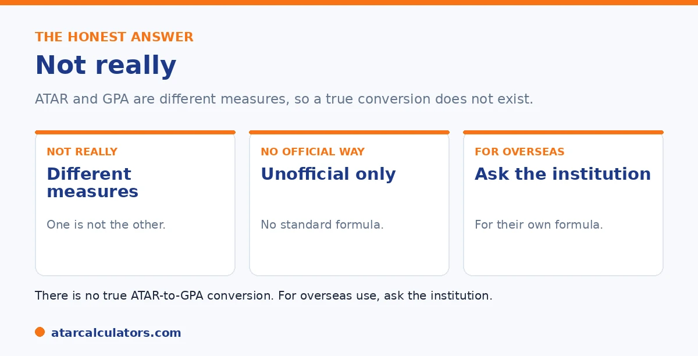

Here is the short version. You cannot truly convert ATAR to GPA, because they are different measures on different scales. Your ATAR ranks you among Year 12 students; a GPA averages your university grades. There is no official conversion, and any figure is an approximation. If you need a GPA for an overseas application, ask the specific institution for its needed conversion, or use a credential evaluation service.
Plenty of tools claim to convert your ATAR to a GPA. The honest answer is that a true conversion is not really possible, and it helps to understand why.
Below is the honest answer, with what to do if you need a GPA. For an indicative view, use our ATAR to GPA converter.
Key takeaways
- You cannot truly convert ATAR to GPA.
- They are different measures on different scales.
- There is no official conversion.
- Any figure is an approximation.
- For overseas use, ask the institution.
- Domestically, you rarely need to convert at all.
The honest answer
The honest answer is no, not in any true sense. Your ATAR is a rank among Year 12 students. A GPA is an average of university grades. Converting one to the other is like converting your position in a race into your average lap time. They are simply different things.

So while you can map an ATAR onto a GPA scale by rough analogy, that is an approximation, not a real conversion. No official body provides one.
Why a true conversion is not possible
Two things make it impossible. First, they measure different stages: school-leaving rank versus university performance. Second, a rank and a grade average are different kinds of number, so there is no formula linking them.
On top of that, GPA scales themselves vary, with 7.0 and 4.0 versions in use. So even the GPA side is not a single standard. See our guide on ATAR vs GPA.
It is worth unpacking why these obstacles are fundamental rather than just inconvenient. This is because it explains why any "ATAR to GPA" table you find online is guesswork. An ATAR is a rank. A 90 means you finished ahead of 90% of your Year 12 cohort. And it tells you nothing about your actual marks, only your position relative to everyone else. A GPA is an average of achievement. It takes your real university grades, converts each to grade points, and averages them against a fixed standard. Converting between a rank and an average is not a matter of finding the right formula. The two answer different questions. So there is no true mathematical bridge from one to the other. The timing gap compounds this. This is because your ATAR is fixed at the end of school while your GPA is built years later from work you have not yet done. So nothing about your university performance is determined by your rank at eighteen. And even the GPA end of the equation is not standardised. Seven-point and four-point scales are both in use, and different institutions map marks to grade points differently. So the same transcript can yield more than one GPA. Put together, these are three independent reasons a genuine conversion cannot exist. The practical consequence is simple. Never rely on an ATAR-to-GPA table for anything that matters. Where a GPA is genuinely needed, calculate it from real university marks on the relevant scale. Or ask the assessing body how they want your results expressed.
Want an indicative view?
Try the ATAR to GPA converter →What to do if you need a GPA
If you genuinely need a GPA, usually for an overseas application, the right step is to ask the specific institution how it wants your results presented. Many have their own equivalency approach, or use a credential evaluation service.
So rather than relying on a generic conversion, go to the source that needs the number. They will tell you the method they accept. See our guide on ATAR to GPA tables.
For domestic purposes
For most domestic purposes, you do not need to convert your ATAR at all. Australian universities use your ATAR for entry, then your university results, reported as a WAM or GPA, for everything afterward.
So your ATAR and your later university average serve different roles, and you rarely need to bridge them. See our guide on university grading.
Two different measures
The reason there is no clean conversion is that ATAR and GPA measure completely different things. Your ATAR is a rank: it shows where you finished against other Year 12 students, on a scale up to 99.95. Your GPA is an average of the grades you earn at university, on a scale up to 7.
So one is a position in a cohort, and the other is a measure of your own performance in your degree. Converting between them is a bit like converting your height into your weight: the two are related in loose ways, but one does not determine the other.
What actually determines your GPA
Your GPA is determined by how you perform at university, not by your ATAR. Independent study habits, consistency across a whole degree, how well a course suits you, and how you adapt to university-style assessment all shape your GPA far more than your Year 12 rank.
This is why students with similar ATARs end up with very different GPAs, and why some students lift their game at university while others find it harder. Your GPA is written over three or more years of your own work, not predicted by a single number from Year 12.
What GPA does a 90 ATAR equal?
As a rough guide only, an ATAR around 90 is sometimes mapped to a GPA in the region of 5.5 to 6, and an ATAR of 99 or above to a GPA of 6.5 or higher. But these are very loose indications, not conversions, and your real GPA could land well above or below them.
So treat any single figure with caution. An ATAR of 90 does not entitle you to a GPA of 6, and an ATAR below that does not cap your GPA. What you do at university is what sets your GPA.
Does ATAR predict your GPA?
Only weakly. A high ATAR shows you handled Year 12 well, which is a positive signal, but university rewards different skills: independent study, consistency, and adapting to new forms of assessment. So the link between ATAR and GPA is loose. See does ATAR predict your GPA.
Many students with mid-range ATARs earn strong GPAs, and some very high-ATAR students find university grades harder to come by. So your ATAR is a starting point, not a forecast of your university results.
How to use the converter sensibly
An ATAR-to-GPA converter is useful as a rough, indicative starting point, for example to get a very loose sense of scale when an overseas application asks you to express your background in GPA terms. It is not a way to predict your future university GPA.
So use our ATAR to GPA converter for a ballpark figure, and treat the result as indicative only. For your actual university GPA, calculate it from your grades once you have them.
The honest takeaway
The honest takeaway is that you cannot truly convert an ATAR to a GPA, because they measure different things. Any mapping is a rough guide, and your ATAR does not determine your GPA. What matters at university is how you perform there.
So do not read too much into a converted figure, in either direction. A strong ATAR is a good start, and a modest one leaves plenty of room to earn a strong GPA through your own work.
Common questions
Can you convert ATAR to GPA?
Not truly. ATAR and GPA are different measures on different scales, so there is no real conversion between them. You can map an ATAR onto a GPA scale by rough analogy, but that is an approximation, not an official conversion.
Is there an official ATAR-to-GPA conversion?
No. No official body provides one, because your ATAR is a school-leaving rank and a GPA is a university grade average. They measure different things at different stages, so there is no standard formula linking them.
What GPA does my ATAR equal?
There is no exact answer, since the two are different measures. Any figure you see is an approximation from an individual source. For an official equivalence, you would need to ask the specific institution requesting it.
How do I get a GPA for an overseas application?
Ask the specific institution how it wants your results presented. Many have their own equivalency approach or use a credential evaluation service. Go to the source that needs the number rather than using a generic conversion.
Do I need to convert my ATAR for Australian universities?
Usually not. Australian universities use your ATAR for entry, then your university results, reported as a WAM or GPA, afterward. So your ATAR and your university average serve different roles and rarely need bridging.
See an indicative view
Explore how an ATAR loosely compares with a GPA scale. Indicative only.
Open the ATAR to GPA converter →Related guides
This guide is general information for students, not formal academic advice. ATAR and GPA measure different things on different scales, so there is no official conversion between them. Any figures here are approximate. For overseas applications, ask the specific institution for its needed conversion, or use a credential evaluation service. Grade scales also vary by university, so confirm with your own. The ATAR authority for your state is your admissions centre, such as UAC. Reviewed by the ATARCalculators Editorial Team.